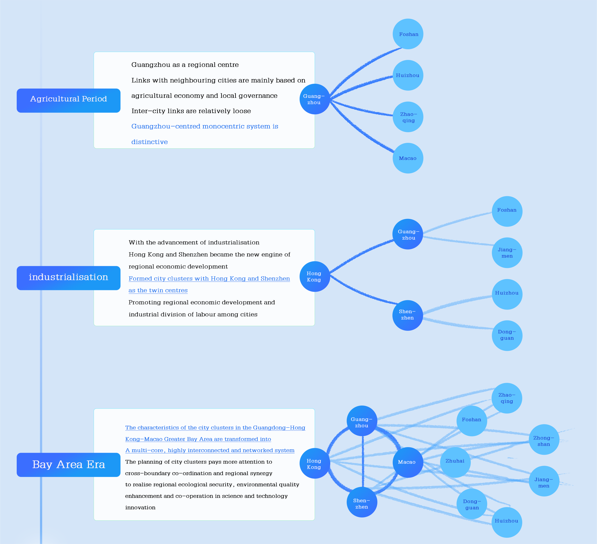
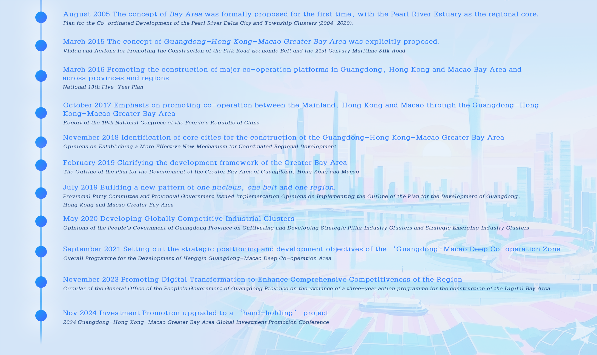
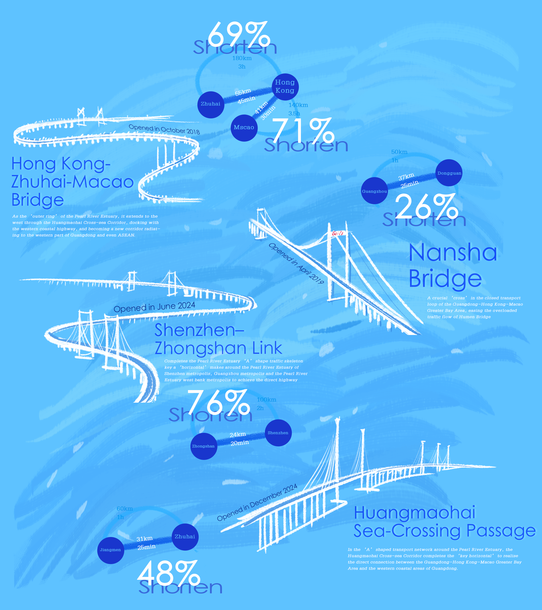
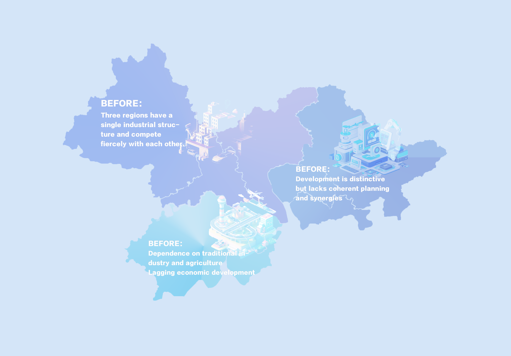
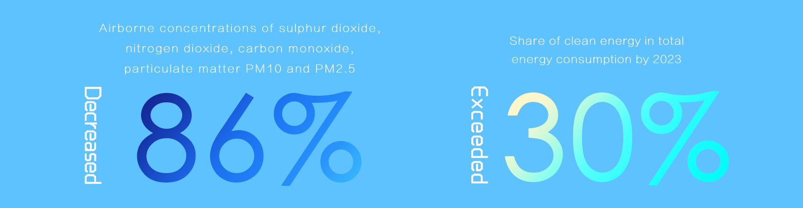

As the first rays of sunlight bathe the shimmering waters of the Pearl River Estuary, the Guangdong-Hong Kong-Macao Greater Bay Area celebrates its fifth anniversary. Hong Kong, Macao, and the nine cities of the Pearl River Delta have increasingly fused into a harmonious Bay Area, revealing its profound essence and vast potential. Over the past five years, the Greater Bay Area, occupying less than1% of the country’s land area and home to just 6% of its population, has generated 11% of the nation's GDP, demonstrating boundless vitality and potential.
Since 2018, the total economy of the Greater Bay Area has grown from 10.8 trillion yuan to over 14 trillion yuan in 2023, demonstrating a robust growth momentum. This growth is equivalent to having "created a new Shenzhen." Over these five years, the total import and export volume of the nine mainland cities has approached 40 trillion yuan, further underscoring the Greater Bay Area's significant position in the global economy.
The wheels of history roll forward relentlessly. Though five years may seem brief, they are more than enough to witness the transformation and rise of a region. Today, five years later, it is necessary for us to revisit why the cities of the Greater Bay Area have come together and to reflect on the achievements of the region. Why have these cities converged? It is due to the deep historical connections between them, as well as the present-day opportunities they share. And what has the Greater Bay Area achieved? Over these five years, it has answered this question with dazzling data and compelling stories.
At this milestone moment, we look back on the past, deeply reflect and summarize, gather our strength, and prepare to embrace a future that shines even brighter.
Reasons for Being Together
The Historical Bonds Between Cities
Over the past five years, Hong Kong, Macao, and the nine cities of the Pearl River Delta have moved towards deep integration in the development of the Guangdong-Hong Kong-Macao Greater Bay Area. However, in fact, during the Ming and Qing dynasties, the Pearl River Delta Bay Area already presented itself to the world as a unified urban landscape. Cities such as Guangzhou, Shenzhen, Hong Kong, Macao, Dongguan, Foshan, Zhongshan, Zhuhai, and Jiangmen once together formed a magnificent city — the Guangzhou Prefecture.

During the Ming and Qing dynasties, Guangzhou Prefecture was renowned for its unique economic position. The Gazetteer of Guangzhou Prefecture describes its prosperity with the words: "The rivers and mountains are clear and bright, and the brilliance of its culture shines. The capital city is flourishing, with abundant resources." Its economic policies were equally distinctive. The Gazetteer of Guangzhou Prefecture even has a dedicated section on the salt administration, documenting the trade of sea salt in Guangzhou, which reflects the special economic status of Guangzhou Prefecture during that era.
The Present Opportunities Between Cities
After extensive deliberation, China has established the development of the Guangdong-Hong Kong-Macao Greater Bay Area as a national strategy, unveiling a series of policies to support this initiative. The goal is to promote the deep integration of Hong Kong, Macao, and the nine cities of the Pearl River Delta, working together to contribute to the grand objective of achieving the great rejuvenation of the Chinese nation.

After experiencing the rise and fall of history, the cities of the Bay Area have once again encountered new opportunities. With these opportunities now converging, the Bay Area is poised to stand at the forefront of progress.
Achievements in Progress
Closer Connections Within the Bay Area
Shorter Distances for Transport and Daily Life
With the accelerated development of infrastructure in the Guangdong-Hong Kong-Macao Greater Bay Area, regional transportation connectivity has greatly improved, gradually reducing physical distances. Since 2018, the railway network in Guangdong Province has expanded from 28 lines to 41, with total mileage increasing from 885 kilometers to 1,383 kilometers. A three-tier network, consisting of national railways, intercity railways, and urban rail transit, has been established. The current and under-construction lines exceed 5,400 kilometers, and future plans aim to surpass 10,000 kilometers.
In terms of the construction of cross-river and cross-sea passages, several major bridges have been put into use, including the Hong Kong-Zhuhai-Macao Bridge, which opened in 2018, the Nansha Bridge, which opened in 2019, the Shenzhen-Zhongshan Link, set to open in 2024, and the Huangmaohai Cross-Sea Passage. The Hong Kong-Zhuhai-Macao Bridge has shortened the distance from Zhuhai to Hong Kong by 69%; the Nansha Bridge has reduced the travel time from Guangzhou to Dongguan by 26%; the Shenzhen-Zhongshan Link will cut the travel time from Zhongshan to Shenzhen by 76%; and the Huangmaohai Cross-Sea Passage has reduced the travel time from Jiangmen to Zhuhai by 48%. The Greater Bay Area's "one-hour living circle" is accelerating into reality.

Shorter Distances for Industry Collaboration and Innovation
From 2018 to 2022, the Guangdong-Hong Kong-Macao Greater Bay Area made significant strides in technology and economic development, with industry collaboration and innovation becoming increasingly interconnected.
Research and development investment grew from 224.8 billion yuan in 2018 to 426.9 billion yuan in 2022, demonstrating the area's ongoing emphasis on and support for technological innovation. Meanwhile, the number of patent grants increased from over 380,000 in 2018 to over 760,000 in 2022. This growth not only reflects the vibrancy of innovation activities but also highlights the progress the Greater Bay Area has made in intellectual property protection and utilization.
The deep collaboration in industrial chains and the coordinated development of enterprises within the Guangdong-Hong Kong-Macao Greater Bay Area are driving increasingly close economic ties across the region. The Greater Bay Area has formed three major industrial clusters:
1. The eastern bank of the Pearl River, with Shenzhen and Dongguan at its core, leverages high-tech industries and advanced manufacturing to drive technological innovation.
2. The Guangzhou-Foshan-Zhaoqing region utilizes its traditional industrial strengths while transforming towards higher value-added industries, showcasing the potential for industrial upgrading.
3. The Zhuhai-Zhongshan-Jiangmen cluster optimizes its industrial layout through transportation hubs, promoting industrial agglomeration in cities like Zhuhai and Zhongshan.
This cross-regional collaboration fosters the efficient flow of resources and provides vital support for the economic integration of the region.
Hover over the image to view industrial transformation

Technology-driven innovation has provided strong momentum for industrial upgrading and corporate collaboration. The number of national high-tech enterprises in Guangdong Province increased from 45,000 in 2018 to 75,000 in 2023, maintaining the national lead for 8 consecutive years. This has driven comprehensive collaboration across the entire industrial chain. At the same time, the number of unicorn enterprises rose from 35 in 2019 to 70, covering various sectors such as electronic information, smart home appliances, and green petrochemicals. These companies not only highlight the Greater Bay Area's significant position in global innovation but also foster deeper collaboration within regional industrial chains, contributing to the high-quality development of the "8372" strategic industrial clusters.
Shorter Distances for Ecology
The rapid development of the Guangdong-Hong Kong-Macao Greater Bay Area has significantly strengthened environmental collaboration, continuously shrinking the ecological distance between regions. Green infrastructure has become a cornerstone of progress, with energy-efficient buildings and green transportation networks driving advancements in regional sustainability.
For example, cities like Zhuhai and Shenzhen have actively promoted the construction of green buildings and energy systems, while Guangzhou has seen a steady rise in its green mobility index. Cross-border environmental governance has also been enhanced, with pollution control projects in the Pearl River water system transcending administrative boundaries between Guangdong Province and Macao. Local governments and enterprises have collaborated on transboundary initiatives to address water pollution.

In 2023, data from the Pearl River Delta Regional Air Monitoring Network showed significant reductions in air pollutants, including sulfur dioxide, nitrogen dioxide, carbon monoxide, PM10, and PM2.5. Annual average concentrations of these pollutants dropped by up to 86% compared to historical peaks. Meanwhile, the Greater Bay Area has made notable progress in green energy adoption, with clean energy now accounting for over 30% of total energy consumption in 2023. These efforts have not only improved regional ecological quality but also laid a strong foundation for harmonious coexistence between humans and nature.
A Brighter Life in the Bay Area
As the development of the Greater Bay Area accelerates, a series of policies in cross-border healthcare, education, and mutual recognition of professional qualifications have been implemented, significantly enhancing the convenience and quality of life for residents in the region.
A Happier Learning Experience in the Bay Area
In the field of education, a vibrant landscape of shared resources and collaborative talent cultivation is unfolding across the Greater Bay Area. In higher education, institutions such as Hong Kong and Macao’s leading universities have pioneered the establishment of branch campuses or joint ventures in the region, while mainland universities like Shenzhen University and Sun Yat-sen University have extended their research institutes to Hong Kong and Macao. Beyond higher education, cooperation in basic education is deepening. The availability of high-quality educational resources in cities like Guangzhou and Shenzhen has attracted a growing number of students from Hong Kong and Macao. In 2023 alone, over 80,000 Hong Kong and Macao students were enrolled in primary and secondary schools in Guangdong.
Comprehensive Protection for Bay Area Residents
In healthcare and social security, cross-border integration has provided residents with more comprehensive safeguards. Over 300,000 residents from Hong Kong and Macao have enrolled in Guangdong’s social insurance programs—including old-age, unemployment, and work-related injury insurance—enjoying equal access to healthcare and welfare benefits as mainland residents. Cross-border medical insurance collaboration has also expanded, with Guangdong’s hospitals and those in Hong Kong and Macao improving reimbursement rates and coverage for residents seeking medical care on the mainland.
Additionally, the Greater Bay Area has introduced policies to enhance elderly care for cross-border residents. In 2023, over 200,000 Hong Kong and Macao residents accessed elderly care services in Guangdong, further solidifying the region’s support for seamless cross-border living and bolstering residents’ sense of well-being.
Safer, Greener Diets for All
In the realm of food security, the Guangdong-Hong Kong-Macao Greater Bay Area’s "Basket Program"（"菜篮子"工程）has provided residents with greater access to safe, high-quality, and eco-friendly food. Under the 2019 "Implementation Plan for the Construction of the Guangdong-Hong Kong-Macao Greater Bay Area 'Basket'"（《粤港澳大湾区“菜篮子”建设实施方案》） released by Guangzhou, the city has certified 2,422 "Basket" production bases nationwide. These bases cover a wide range of agricultural products, including vegetables, fruits, meat, and aquatic products, ensuring a steady supply of fresh, premium ingredients for Bay Area residents.
A key innovation is the "Green Channel" initiative, which has dramatically boosted the logistics efficiency and freshness of agricultural products. By streamlining transportation and distribution processes, the initiative guarantees both food safety and nutritional integrity, addressing critical concerns for consumers.
With the implementation of these policies, the quality of services in key livelihood sectors such as healthcare, housing, and education has significantly improved. Hong Kong and Macao youth are increasingly integrating into the Greater Bay Area, with the number of such young professionals working in Guangdong now exceeding 200,000. By continuously refining policy mechanisms, the Guangdong-Hong Kong-Macao Greater Bay Area has created a more convenient and livable cross-border living environment for its residents. These efforts have injected new momentum into regional integration, further strengthening residents’ sense of happiness and belonging.
A Stronger "Greater Bay Area Community"
As the Guangdong-Hong Kong-Macao Greater Bay Area becomes increasingly integrated, more residents across the region’s cities identify with the area’s development vision and embrace a stronger sense of belonging as part of a unified "Greater Bay Area community." According to a survey by the Hong Kong Guangdong Youth Development Association, Hong Kong youth are growing more optimistic about career opportunities in mainland cities within the Greater Bay Area.
With the deepening integration of the Guangdong-Hong Kong-Macao Greater Bay Area, cultural exchanges have become increasingly frequent beyond economic development. In addition to the annual The Greater Bay Area Film Concert , more programs featuring Bay Area elements have entered the public eye. For instance, Endless Melody , a music competition co-produced by Mango TV and Hunan Satellite TV, has become a cultural highlight. The latest season, Endless Melody (Sr.4), focused on amplifying the unique musical identity of the Greater Bay Area , achieved an unprecedented heat index of 9,853.83 on its first day , surpassing previous records and establishing itself as a new benchmark in music that bridges hearts and sets trends.
Furthermore, individuals are increasingly expressing their identification with the "Greater Bay Area identity" through actions and words, actively participating in shaping a shared cultural and social identity within the region.
On the morning of March 7, 2023, Pansy Ho, a Macao-based CPPCC member, stated during the 14th CPPCC National Session:
"Some say I'm Macanese, others call me a Hong Konger—but I am a Greater Bay Area person."
Expressing deep ties to the region, Maria Cordeiro ("Fat Mama") affirmed:"The Greater Bay Area offers vast opportunities—my choice was right!"
The shift in terminology from "Hong Kong residents" and "Macao residents" to "Greater Bay Area residents" reflects a profound transformation in identity. As the Guangdong-Hong Kong-Macao Greater Bay Area becomes increasingly integrated, a more united "Greater Bay Area community" is moving forward hand in hand toward the future!
Epilogue
As the stars of the night fade into dawn, the Guangdong-Hong Kong-Macao Greater Bay Area has traversed five years under the golden light of morning. For this vibrant land, five years are both a testament to time and a microcosm of progress. Every city, every street, and every laborer here has witnessed this grand transformation.
The wheels of history roll forward, and in the boundless river of time, five years may seem but a fleeting moment. Yet at this milestone juncture, we must reflect on why we came together, what we have achieved, and then rally anew. On this new historical starting point, the Greater Bay Area will continue to deepen reform and opening-up, strengthen regional collaboration, and advance innovation-driven development, contributing its strength to the great rejuvenation of the Chinese nation and the Chinese Dream.
We have every reason to believe that the future of the Greater Bay Area will shine even brighter, becoming a global exemplar of world-class urban clusters. Just as the Pearl River Estuary glistens in the dawn, it heralds a future brimming with hope.